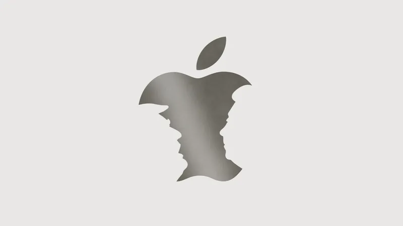
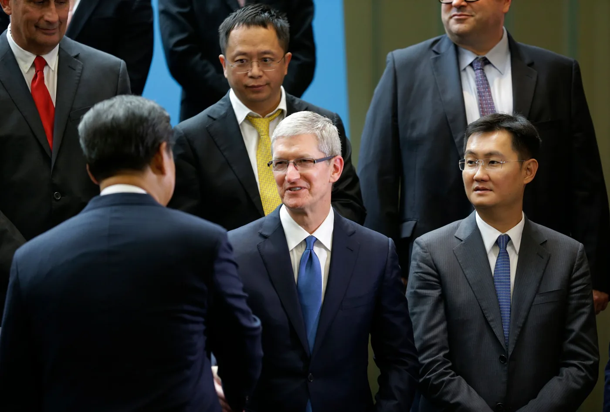

Lit Crit
Can Apple extricate itself from China?
Letting go is hard to do

In May of 2016, while Donald Trump was on the campaign trail railing against China and vowing to strong-arm Apple into “building their damn computers and things in this country,” CEO Tim Cook and a cadre of top Apple executives was quietly meeting with the Chinese Communist Party to pledge the opposite.
Cook and his team had flown to Beijing to meet with officials at the Chinese Communist Party’s headquarters to reassure President Xi Jinping that Apple wasn’t going anywhere. In fact, the company was so invested in China’s future that it planned to spend $275 billion in the country over the next five years.
That’s a staggering, nation state level of investment. The Marshall Plan, the United States’ post–World War II investment in Europe considered among the greatest nation-building exercises of all time and which reestablished the global order for decades to come, was about half that, adjusted for inflation.
By expending such exorbitant resources in China and training so many Chinese workers with its novel, hands-on approach to micromanaging foreign factories, Apple facilitated “an epic transfer of knowledge” to China, writes Patrick McGee in Apple in China: The Capture of the World’s Greatest Company. He forcefully argues that Apple may be the single biggest supporter of President Xi’s “Made in China 2025” plan to break away from the West and become a global technological superpower.

Chip Wars
The U.S. and China both need Apple to succeed, albeit for very different reasons. For Washington, Apple is a symbol of tech might. It is the world’s first $3 trillion publicly traded company, and one that generates great wealth for its (primarily American) stockholders. The prospect of Apple losing a trillion dollars of value, as it did in a matter of weeks before the iPhone and other major electronics were spared President Donald Trump’s “reciprocal tariffs,” would impact virtually everyone with a 401(k) account.
In China, Apple is the Great Teacher. For a quarter-century, the tech giant has made massive investments in equipment and sent thousands of its top engineers to hundreds of factories across the country, training China’s workers how to meet near-impossible engineering standards and then scale production to enormous volumes.
By Tim Cook’s own estimate, Apple’s Chinese suppliers employ 3 million people. Were Apple to move its operations to another country, China would sustain major job losses. Perhaps even worse, it would miss out on the cutting-edge lessons that continue to make it the world’s preferred hub for tech manufacturing. Apple acknowledges that it’s trained 28 million workers in China since 2008, greater than the entire labor force of California.
Contract manufacturing
In the early 1990s, Apple was determined to show it could continue to build computers in the United States as part of its strategy of keeping tight control over every aspect of design and production. But facing bankruptcy in 1996, the company sold its Mac factory in Colorado and started down a long road of outsourcing manufacturing, first in the United States and later in Asia.
After struggling to build its products on three continents, Apple was lured by China’s seemingly inexhaustible supply of cheap labor. Soon it was sending thousands of engineers across the Pacific, training millions of workers, and spending hundreds of billions of dollars to create the world’s most sophisticated supply chain. These capabilities enabled Apple to build the 21st century’s most iconic products—in staggering volume and for enormous profit.
Without explicitly intending to, Apple built an advanced electronics industry within China, only to discover that its massive investments in technology upgrades had inadvertently given Beijing a supply chain that could be weaponized.
“It would be banal to say that Apple wouldn’t be Apple today without China,” McGee writes. “What this book contends is more intriguing—that China wouldn’t be China today without Apple.” Hyperbolic as it may be, McGee presents a convincing case.
Apple has made little progress moving manufacturing out of China
Where devices are manufactured (%)
Apple’s quarter-century consolidation into China has left it deeply vulnerable. While Cook likes to say the iPhone is “made everywhere,” alluding to how hundreds of suppliers originating from at least 40 countries contribute to its production, all roads lead through China. Even iPhones labeled “made in India” are just assembled there—after extensive tooling, stamping, shaping, etching, and fitting of all the materials and parts in China.
Apple in China is the revelatory story of how an outspoken, proud company that once praised “rebels” and “troublemakers”—the company that exhorted us all to “Think Different”—devolved into passively cooperating with a belligerent regime that increasingly controls its fate.
Meanwhile, the latest phones from Chinese companies Huawei and Oppo now match, and arguably exceed, the flagship devices from Apple. The student, as they say, is becoming the master.
About the author
Patrick McGee was the Financial Times’s principal Apple reporter from 2019 to 2023, during which time he won a San Francisco Press Club Award for his coverage. He joined the newspaper in 2013, in Hong Kong, before reporting from Germany and California. Previously, he was a bond reporter at The Wall Street Journal. He has a master’s degree in global diplomacy from SOAS, University of London, and a degree in religious studies from the University of Toronto. He and his family live in the Bay Area.